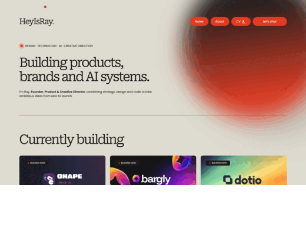
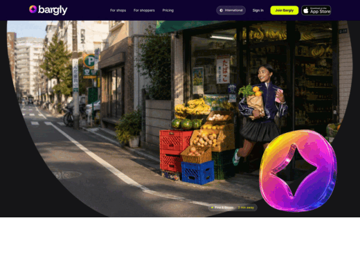
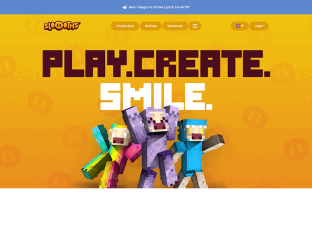
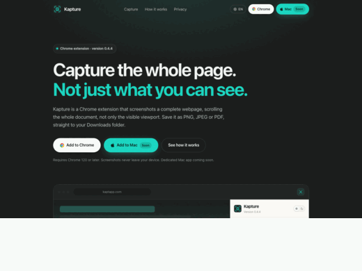
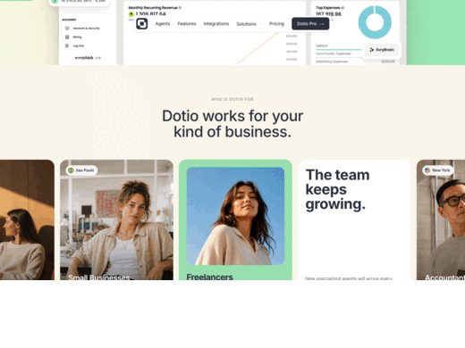
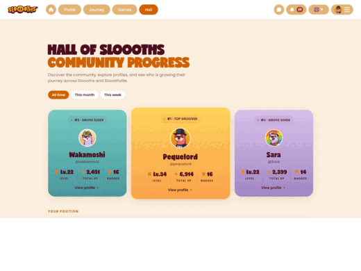

PNG
getdotio_001.png
2 hours ago☆ ⋯
Chrome 扩展程序 0.4.9 · Kapture Pro
Kapture 直接在 Chrome 里保存整张网页或你框选的区域。 Kapture Pro 把它们变成电脑上一个井井有条、可搜索的可视化图库。
需要 Chrome 120 或更高版本。Chrome 版 Kapture 免费，Kapture Pro 即将推出 Mac 版和 Windows 版。
Kapture Pro Mac 版
All Captures
Every screenshot and PDF in your Kapture folder.
getdotio_001.png
2 hours ago☆ ⋯

PNGohmywork_001.png
4 hours ago☆ ⋯

JPGbargly_001.png
Yesterday☆ ⋯

PNGsloooths_001.png
Yesterday☆ ⋯

PNGkaptapp_001.png
2 days ago☆ ⋯

PNGgetdotio_002.png
3 days ago☆ ⋯

PNGsloooths_002.png
3 days ago☆ ⋯
Kapture Chrome 版
使用方法
找到你想保存的内容。
侧边栏会在页面旁边打开。
选整页或某个区域，然后保存。
Chrome 版 Kapture · 0.4.9
截取整张网页，或只框选你需要的那块区域。以 PNG、JPEG 或 PDF 保存在本地。
把整张网页保存到你的项目里。过长的页面按 8,000 像素分段。
在你需要的地方拖出选框。只保存那一块区域。
扩展程序里有什么
截图前先选好格式。PDF 会生成一个本地的多页文件。
按当前窗口截图，也可以先用手机 390、平板 820、桌面 1440 或桌面 1920 的宽度重新渲染页面。
按页面或项目给文件夹命名。截图会按顺序存进去，Kapture Pro 随时可以接手。
最新的排在最前，带预览、网站和时间。可以直接打开某张截图，也可以勾选多张彻底删除。
侧边栏两种主题都有，并会记住你的选择。
没有账号，没有广告，没有数据统计。截图在你的电脑上生成，也留在那里。
Kapture Pro
Kapture Pro 会索引你电脑上已有的截图，把它们变成一个可搜索的可视化图库。 文件不会被移动，不会被上传，也不会离开硬盘。
All Captures
Every screenshot and PDF in your Kapture folder.
getdotio_001.png
2 hours ago☆ ⋯
ohmywork_001.png
4 hours ago☆ ⋯
bargly_001.png
Yesterday☆ ⋯
sloooths_001.png
Yesterday☆ ⋯
kaptapp_001.png
2 days ago☆ ⋯
getdotio_002.png
3 days ago☆ ⋯
sloooths_002.png
3 days ago☆ ⋯
New Project
Creates a folder inside your Kapture folder. Screenshots saved there appear in this project.
Icon
Color
智能
智能是 Kapture Pro 里的一个地方，包含五个工具。它会告诉你哪些还没整理、哪些文件是完全相同的副本、哪些值得再看一眼、你的截图来自哪里，以及你让 Kapture 替你做的整理。
Smart
Captures that are not in a Project yet, from every source.
Captures whose files are exactly the same, byte for byte.
Captures worth a second look. Nothing here is removed for you.
Where your captures came from.
Tidying you asked Kapture to do for you.
ohmywork_001.png
bargly_001.png
getdotio_002.png
sloooths_002.png
sloooths_001.png
kaptapp_002.png
getdotio_003.png
ohmywork_002.png
2 identical files 2.6 MB each
getdotio_001.png · getdotio_001 copy.png
2 identical files 1.4 MB each
kaptapp_001.png · kaptapp_001 (1).png
sloooths_001.png
sloooths_002.png
bargly_001.png
getdotio_002.png
ohmywork_001.png
kaptapp_001.png
Nothing here is removed for you.
Desktop Screenshots
5 captures
getdotio.com
2 captures
kaptapp.com
1 capture
ohmywork.com
1 capture
Rules never delete anything.
Kapture 工作流
Kapture 负责在 Chrome 里截图。Kapture Pro 把截下来的东西变成一个图库，再由智能、收藏集和项目让它保持有序。看看每个产品单独能做什么，以及两个一起用能带来什么。
| 功能 | Chrome 版 Kapture | Kapture Pro | 一起用 |
|---|---|---|---|
| 整页截图 | |||
| 框选区域截图 | |||
| PNG、JPEG 或 PDF | |||
| 保存到本地 | |||
| 可视化截图图库 | |||
| 项目与合集管理 | |||
| 智能整理 | |||
| 搜索与筛选 | |||
| 标签与备注 | |||
| 文件信息面板 | |||
| 九种语言 + 跟随系统 | |||
| 从截图到整理的完整流程 |
语言
Chrome 版 Kapture 和 Kapture Pro 都支持英语、西班牙语、简体中文、韩语、日语、德语、法语、巴西葡萄牙语和意大利语。你可以自己选一个，也可以保持“系统”，让 Kapture 跟随电脑已有的设置。
隐私
Kapture 在你的电脑上生成截图，并通过 Chrome 自带的下载功能保存。Kapture Pro 读取的是电脑上已有的文件。没有任何东西被上传，两款产品都不需要账号，也都不含 分析、广告或追踪。
常见问题
关于 Kapture 最常见的问题，直接给出答案。
Kapture 是一款分为两部分的截图与可视化图库产品。Chrome 版 Kapture 负责截取网页。Kapture Pro 是桌面端的截图管理器，把电脑上已有的截图变成一个可搜索的可视化图库。
Chrome 版 Kapture 现已推出，免费，需要 Google Chrome 120 或更高版本。Kapture Pro 是桌面应用，计划支持 Mac 和 Windows。两个桌面版都尚未发布，所以目前 Mac 和 Windows 都还没有可下载的版本。
可以。Chrome 版 Kapture 会滚动整个文档，而不是只截取可见部分，也可以只截取你拖选的区域。两种方式都能保存为 PNG、JPEG 或 PDF。
用项目和收藏集。项目是主要的工作结构，手头每件工作一个，Kapture 文件夹里的任何子文件夹都会自动成为一个项目。收藏集在图库里，用来把你想放在一起的东西归到一处。一张截图可以同时属于一个项目和多个收藏集。
智能是 Kapture Pro 里的一个工作区，包含五个工具：未整理会找出还没归入项目的截图，重复项会找出逐字节完全相同的文件，清理会列出值得再看一眼的旧文件和大文件，来源按出处把截图分组，规则则按你的要求归档新截图。智能永远不会替你删除任何东西。
就在你自己的电脑上。Chrome 版 Kapture 通过 Chrome 自带的下载功能保存，Kapture Pro 读取硬盘上已有的文件而不会移动它们。Kapture 以本地优先：截图、保存和整理图库都在你的机器上完成，不依赖任何云服务。两款产品都不含分析、广告或追踪。
两款产品都提供九种语言：英语、西班牙语、简体中文、韩语、日语、德语、法语、巴西葡萄牙语和意大利语。两者还都有“系统 / 默认”选项，跟随你电脑已设置的语言。
不需要。Chrome 版 Kapture 可以单独使用：它截取页面，并把文件保存到你指定的位置。Kapture Pro 是桌面的那一半，在你已有的截图之上加上图库、搜索和整理。两者是为配合使用而设计的，各自单独也都好用。
免费
整页和区域截图，直接存进你选好的项目文件夹。
添加到 Chrome一次性买断
搜索、整理并对比你已经截下的所有内容。
Mac 版 Pro价格尚未最终确定。一次付费，无订阅。
一次性买断
搜索、整理并对比你已经截下的所有内容。
Windows 版 Pro价格尚未最终确定。一次付费，无订阅。